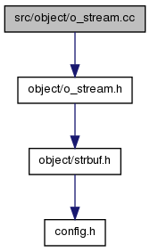

OOStuBS - Technische Informatik II (TI-II)
2.3
Hauptseite
Zusätzliche Informationen
Klassen
Dateien
Auflistung der Dateien
Datei-Elemente
src/object/o_stream.cc-Dateireferenz
#include "
object/o_stream.h
"
Include-Abhängigkeitsdiagramm für o_stream.cc:

gehe zum Quellcode dieser Datei
Ausführliche Beschreibung
Definiert in Datei
o_stream.cc
.
Erzeugt am Mon Apr 15 2013 13:51:48 für OOStuBS - Technische Informatik II (TI-II) von
1.7.6.1
 1.7.6.1
1.7.6.1